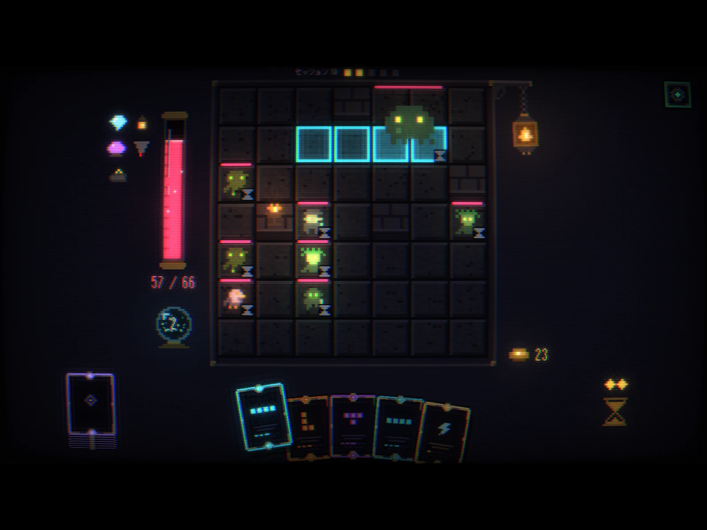

01
Works
AIと一緒につくったもの

Boarmo ボーモ
無限に広がる方眼紙のボードに文字を書き込み、メモ紙を貼っていけるデスクトップ用メモアプリ。
Ideaコルクボードにメモ紙を貼るような、自由に置いて動かせる感覚をデジタルで。画鋲を刺して固定する、という現実の手触りをそのまま操作にしました。
- 方眼のマスに1文字ずつ書き込める（日本語入力にも対応）
- メモ紙はマス目に吸着。画鋲の本数で「位置の固定」「編集ロック」を切り替え
- マスの角や辺にだけ吸着する線・矢印、ラジオのチューナー風ズーム
- Windows
- Tauri
- React
- Claude Code
Talee
Talee タリー
長編小説の執筆と、キャラクター・世界観・伏線などの設定管理をひとつにまとめた、Windows用の小説執筆アプリ。
IdeaNotionで長編を書いていたら、1話ごとの文章の密度が測りにくく、登場人物や設定もその場で確認できない。だから、物語の整合性を保ちながら書くための道具を自分用につくりました。
- セリフ・心の声・強調を色分けする本文エディタ。文字数やセリフの割合もリアルタイム表示
- 登録したキャラや用語が本文に出ると自動リンク。マウスを乗せるだけでメモを確認
- 伏線の「張った／回収した」管理、複数の時系列、話ごとの密度グラフ
実際に 88話・約15万字 の長編の執筆に使いながら、改善を続けています。
- Windows
- Tauri
- React
- SQLite
- Claude Code
02
How I make
つくり方は、とてもシンプル
-
STEP 1
思いつく
日常の「これ、あったら便利かも」「つくってみたい」を拾います。ここが一番大事なところ。
-
STEP 2
AIに伝える
Claude Code などの生成AIに、やりたいことを言葉で伝えます。コードを書くのはAIの担当です。
-
STEP 3
使って、また直す
実際に使ってみて、気になったところをまたAIに頼む。この「Re」をくり返して育てていきます。
03
About
つくっている人のこと
ReTatoo
Idea Maker × Generative AI
特別なプログラミングの技術や、これといった特技があるわけではありません。
「つくりたい」と思ったものを、つくりたいときに、生成AIにつくってもらっている人間です。勝負しているのは技術ではなく、アイデア。思いつきを、その日のうちに動くアプリにできる時代を楽しんでいます。
Partner
- Claude Code
- Generative AI
My part
- アイデア
- 企画
- 使ってみる